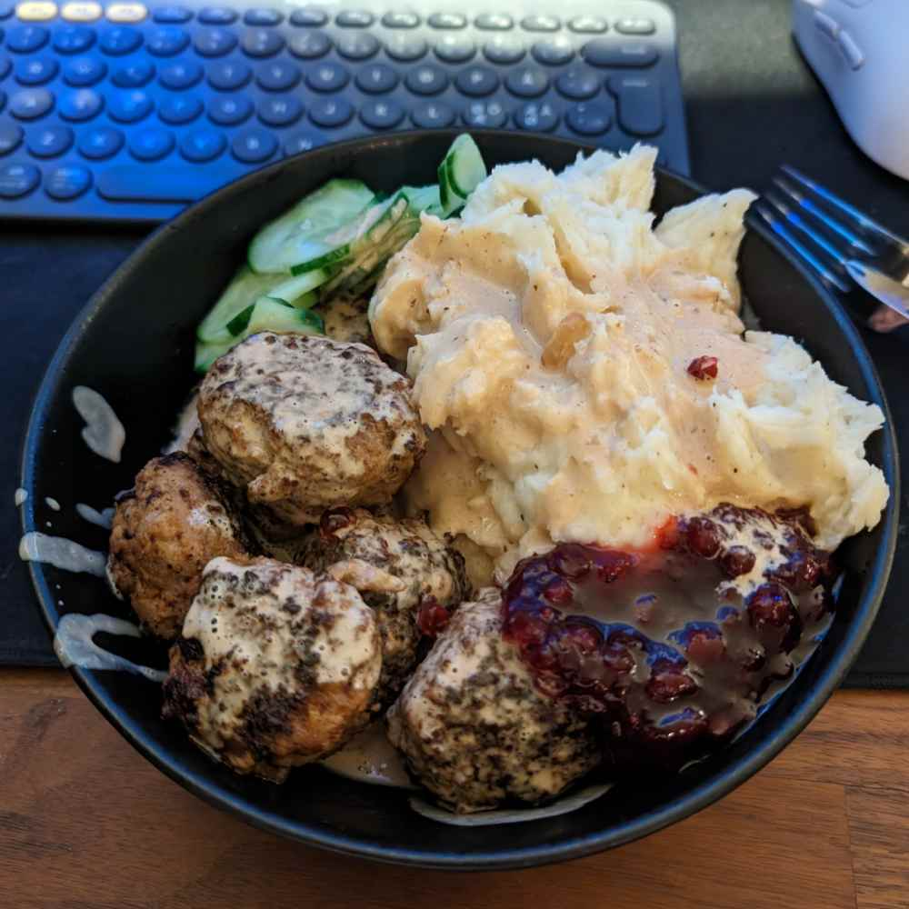

Swedish Meatballs

Ingredients
- 500 g mince meat
- 1 Egg
- 1.5 dl iMat
- 2 tbps Dijon mustard
- 1 tbps Veal stock
- 1 dl Breadcrumbs
- 1 tsp Cinnamon
- 1 tsp Allspice
- 1 tsp Black pepper
- 1 tsp Cayenne pepper
- 12 g / 1.5 tsp Salt
Directions
- Mix all the spices and breadcrumbs
- Then mix in the iMat, stock and mustard and let is swell for 5-10 minutes
- Mix the meat with the egg and the mix from earlier and then you have your meatball mixture.
Go back to cooking page
Go back to homepage